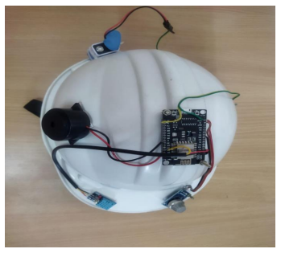
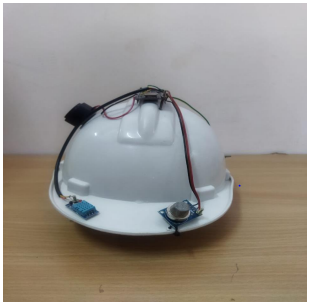
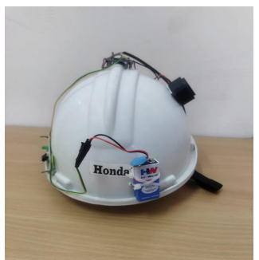
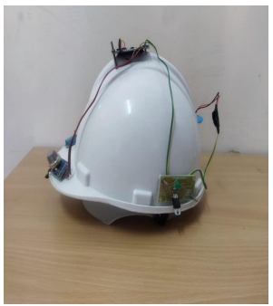
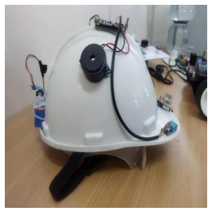

IoT - Based Smart Helmet for Coal Miners
A wearable IoT safety system designed to monitor environmental conditions and miner health parameters while providing real-time hazard alerts and remote monitoring support.
Overview
The Smart Miner’s Helmet is an IoT-based wearable safety system designed for coal mining environments. The system integrates an ESP8266 microcontroller with multiple sensors to monitor important environmental and miner-related parameters such as gas levels, temperature, humidity, location, motion, and vital signs.
Sensor data is processed by the ESP8266 and transmitted wirelessly to a central server or monitoring platform. When potentially hazardous conditions are detected, the system can generate alerts for the miner and provide supervisors with real-time monitoring information.
The Problem
Coal mining is an inherently hazardous occupation where miners may be exposed to toxic gas leaks, poor air quality, high temperatures, accidents, and other dangerous underground conditions.
Traditional safety equipment and monitoring systems may not provide comprehensive real-time environmental and health information. Delayed detection and communication can make it difficult for miners and supervisors to respond quickly during critical situations.
The project addresses the need for continuous monitoring of mining conditions and timely alerts through a connected wearable system.
Objectives
- Monitor environmental conditions inside underground mining environments.
- Detect dangerous gases such as methane and carbon monoxide.
- Monitor temperature, humidity, and air-quality conditions.
- Monitor selected miner health and vital parameters.
- Track miner movement and location for emergency response.
- Provide real-time hazard alerts when predefined thresholds are exceeded.
- Transmit sensor information wirelessly to a central monitoring system.
- Support supervisors in remotely monitoring miners and responding to emergencies.
System Workflow
The proposed helmet follows a continuous sensing, processing, communication, and alert workflow:
Environmental and health information is collected through sensors integrated into the helmet. The ESP8266 processes the readings and evaluates predefined safety thresholds. The processed information can then be transmitted to a central server or monitoring platform using wireless communication protocols such as Wi-Fi, HTTP, or MQTT.
Architecture
The proposed system consists of several connected layers that work together to provide wearable safety monitoring.
Sensor Layer
Collects environmental, motion, location, and health-related information from sensors mounted on the helmet.
ESP8266 Processing Layer
Reads sensor values, processes the collected information, and evaluates predefined safety conditions.
Communication Layer
Transmits helmet data using wireless technologies such as ESP8266 Wi-Fi, HTTP, or MQTT.
Monitoring Layer
Receives and monitors sensor information through a central server or monitoring platform.
Alert Layer
Generates warnings when dangerous gas levels, temperature, or other monitored conditions exceed defined limits.
Emergency Response Layer
Supports faster intervention by providing location, environmental, and health information during emergencies.
Key Features
Project Showcase
A look at the proposed smart helmet design, hardware components, sensor integration, and system concept.






Technical Implementation
The core of the helmet is based on the ESP8266 microcontroller, which provides Wi-Fi connectivity and acts as the main processing unit for the connected sensors.
Environmental sensors are used to monitor parameters such as gas concentration, temperature, humidity, and air quality. MQ-series sensors are proposed for detecting gases such as methane (CH4) and carbon monoxide (CO).
A MPU6050 accelerometer can be used for detecting sudden movement or falls, while a NEO-6M GPS module can support real-time miner location tracking.
Sensor information can be transmitted to a central server or monitoring platform through Wi-Fi using communication protocols such as HTTP or MQTT.
When sensor values cross predefined safety thresholds, the system can trigger alerts through indicators, sound alarms, or wireless notifications.
Challenges
- Monitoring multiple environmental parameters simultaneously in an underground mining environment.
- Maintaining reliable wireless communication in challenging underground conditions.
- Designing a compact sensor and microcontroller setup suitable for a wearable helmet.
- Managing battery consumption for long operating shifts.
- Establishing suitable thresholds for detecting potentially hazardous environmental conditions.
- Ensuring the helmet remains durable and practical under harsh mining conditions.
- Providing clear and timely alerts that can be quickly understood by miners.
Outcome & Future Scope
The proposed system combines wearable safety equipment with IoT sensing and wireless communication to provide continuous environmental and miner-related monitoring. The concept is designed to support faster awareness of hazardous conditions and improve communication between miners and supervisors.
The project also provides a foundation for further development of connected mining safety systems.
Future enhancements include:
- AI-based hazard prediction and safety analytics.
- More advanced anomaly detection for environmental conditions.
- Improved underground communication using IoT mesh networks.
- Integration with broader mine management systems.
- Enhanced miner location tracking and emergency response.
- Improved battery optimization for long mining shifts.
- Advanced helmet-condition and predictive-maintenance monitoring.
- Stronger security and encryption for transmitted sensor data.
- Integration with AI-driven predictive safety systems.